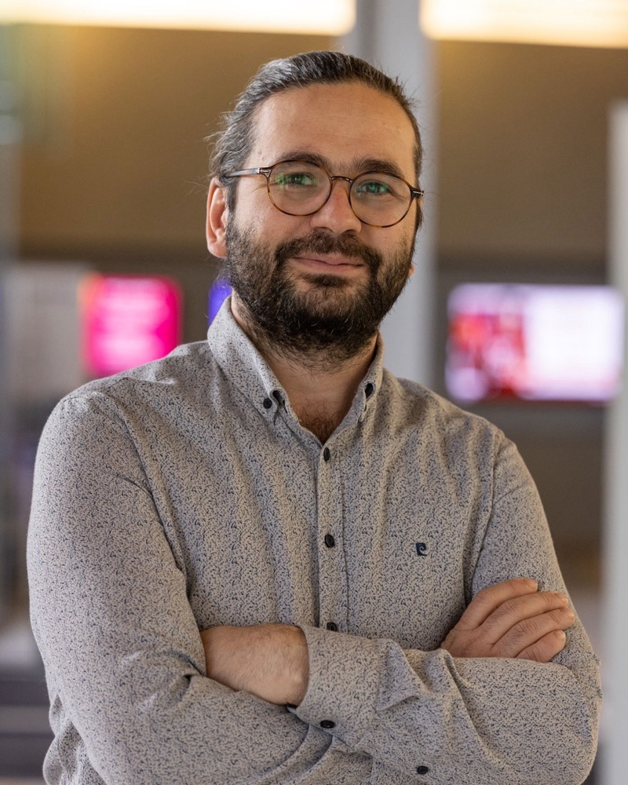

Murat Ambarkutuk, Ph.D.
Principal Perception Engineer
Builds perception for robotics and autonomous systems, from large-scale 3D mapping to compact real-time models on embedded hardware. Earlier work spans localization and sensor fusion. Ph.D. in Computer Engineering, Virginia Tech. Now at R Squared Robotics, a division of Ranpak.
- 013D Reconstruction and MappingMulti-camera calibration, depth fusion and neural scene representations
- 02Multimodal Learning and FusionFusing vision, inertial and other sensors for localization and pose estimation
- 03Vision Foundation ModelsFew-shot recognition and transfer from large pretrained backbones
- 04Pruning and DistillationModel compression and quantization for efficient edge and embedded inference